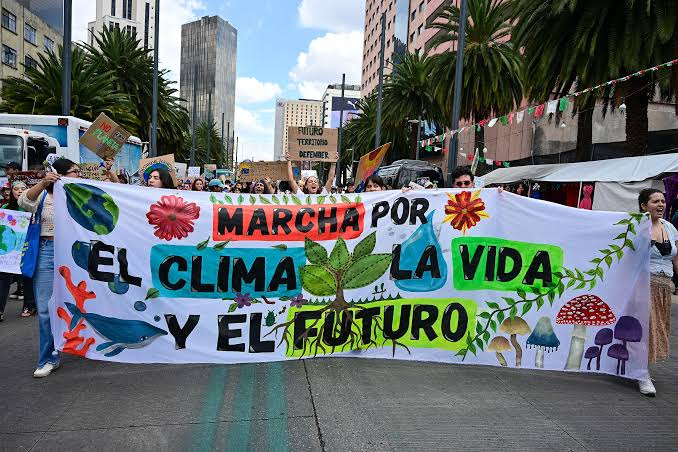
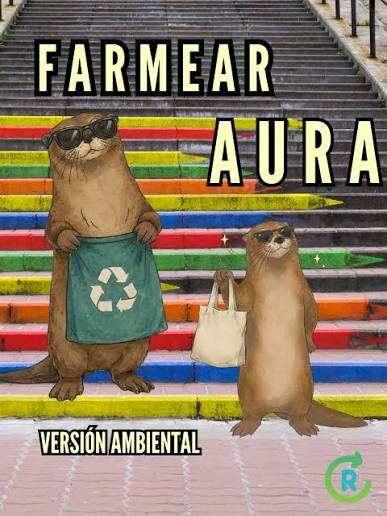
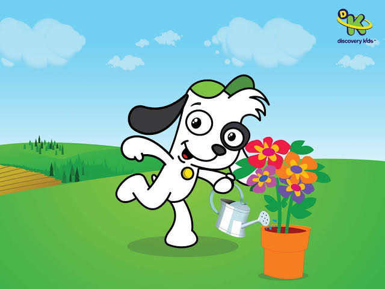

Reconoce un objeto
Revisa las referencias ficticias del puesto de objetos encontrados.
Ver referenciasOficina de pequeños reencuentros
Una mochila olvidada entre los puestos. Una libreta que guarda una historia. En ACME te ayudamos a dar el primer paso para recuperarlas.
Buscar un objeto Conocer la iniciativaUn caso ficticio para aprender HTML y CSS.

Una mesa de ayuda entre los puestos
ACME es una oficina ficticia de objetos extraviados en ferias itinerantes. Cuando el evento se traslada, las personas no saben a quién preguntar ni dónde quedó lo encontrado.
Reunir referencias de objetos y orientar una solicitud de devolución desde una sola web.
El caso se vincula de forma pedagógica con el ODS 11 y el cuidado de los espacios de encuentro comunitario.
Un recorrido sencillo
Revisa las referencias ficticias del puesto de objetos encontrados.
Ver referenciasPrueba una solicitud con una característica que permita reconocer tu objeto.
Probar solicitudConsulta cómo sería el acompañamiento de la mesa de ayuda.
Ver la guíaHU de ejemplo · Consultar objetos encontrados
Elige una categoría y revisa una referencia de demostración. No es un inventario real.
Referencias inventadas. No se realizan búsquedas ni comprobaciones automáticas.
Cómo sería el servicio
La mesa de ayuda recibiría objetos encontrados sin exhibir detalles privados.
Una persona responsable revisaría los detalles de la solicitud.
Si existe coincidencia, se acordaría una devolución en un punto atendido.


“No era solo una libreta. Ahí estaba el dibujo que me hizo mi hija”.
Relato ficticio para representar la necesidad del usuario.
HU de ejemplo · Solicitar una devolución
Déjanos tus datos de contacto y una descripción del objeto extraviado para iniciar la simulación de devolución.